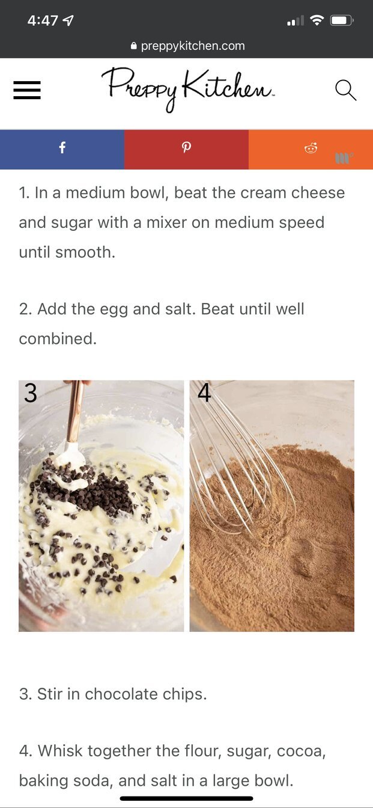
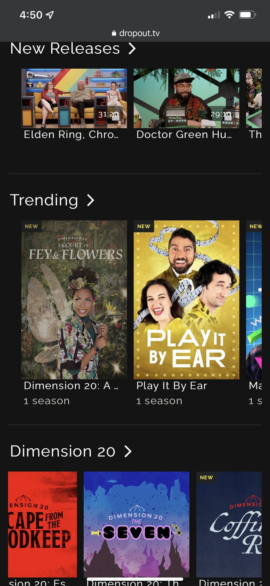
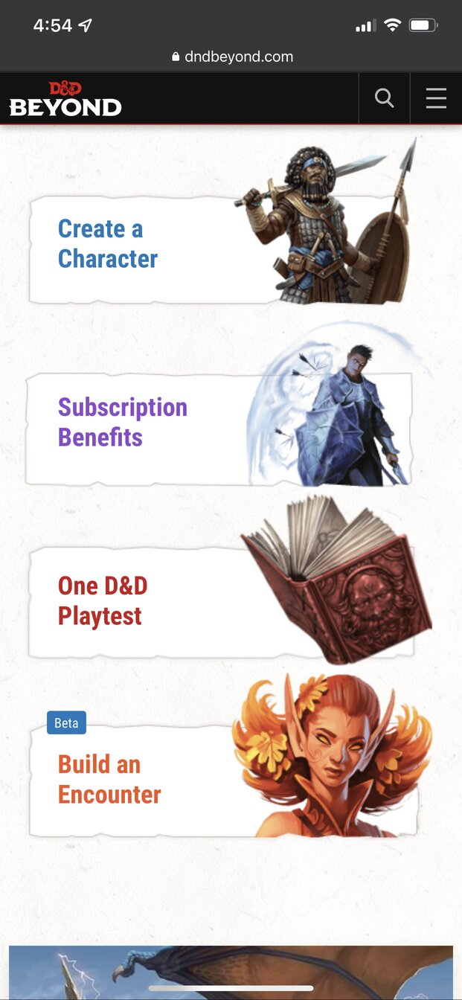

White Space
Preppy Kitchen
Preppy Kitchen's use of white space makes the recipe they list easy to read, easy to follow, and pleasing to look at, even on a mobile device.
Repetition
Dropout.tv
Dropout.tv uses a simple repetive layout to great effect. It allows the user to quickly see what they are currently watching, what show or shows is new. This allows for less time deciding on what to watch and more time watching it.
Alignment
Dndbeyond
Dndbeyond.com uses the alignment for the four items in the screenshot specially very well. Whether you are looking on your tablet, phone, or laptop/desktop, these four items are very easily found because of their alignment. The eye is drawn right to them. On this site, those are the four key elements that are used most frequently. Being able to zero in on them quickly makes the site very user frinedly.